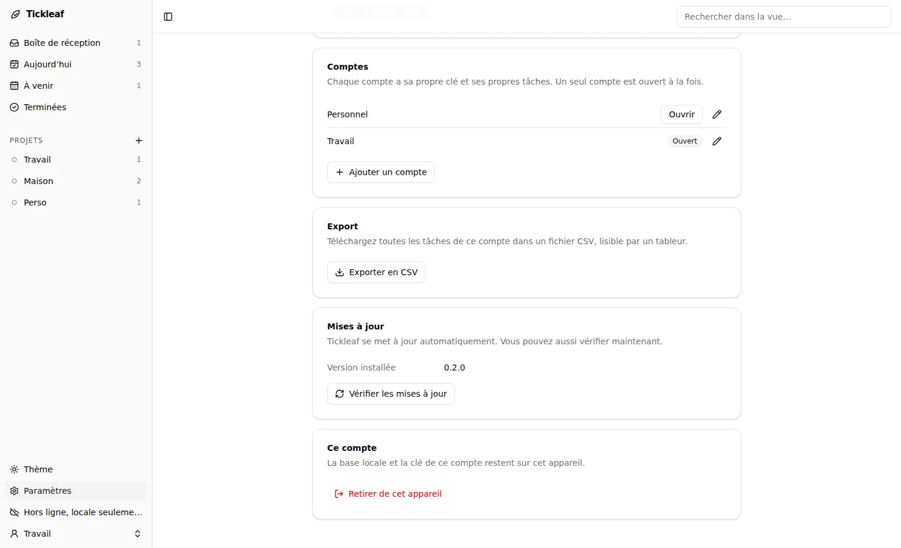
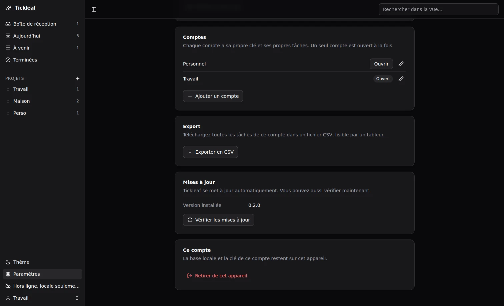

Accounts and devices
An account is one recovery key, with its own tasks, its own encrypted database and its own server address. A device can hold several accounts, for example personal and work.
Several accounts


- Paramètres › Comptes lists the accounts, renames them and opens another one. The app reloads on the chosen account.
- Adding an account goes through the same steps as the first launch: create a key, enter one or scan a QR code.
- With two accounts or more, an account switcher appears at the bottom of the sidebar.
Account names and server addresses are stored in clear text on the device. Tasks are not.
Pair a phone
- On a device already set up and connected to a server, open Paramètres › Clé de récupération.
- Choose Afficher le QR code.
- On the phone, at first launch, choose Scanner un QR code.
The QR code holds the recovery key and the server address. Anyone who photographs it can read your tasks: show it only to your own phone, then hide it.
Without a QR code, enter the recovery key by hand on the new device, then the server address.
Export
Paramètres › Export downloads every task of the open account as CSV: ; separator, UTF-8 with BOM, one row per task. A spreadsheet opens it as is. The Android app saves the file in its Download folder and shows the path.
Remove an account
- Paramètres › Ce compte › Retirer de cet appareil erases the key and the local database of the open account. The tasks stay on the server for your other devices.
- Supprimer sur le serveur also erases the account on the server. Every device loses its tasks. This cannot be undone.